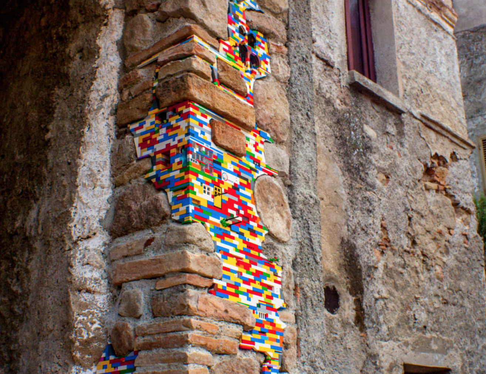
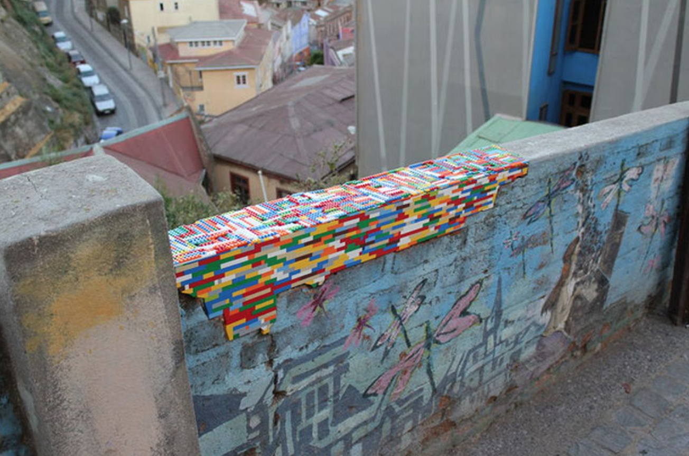
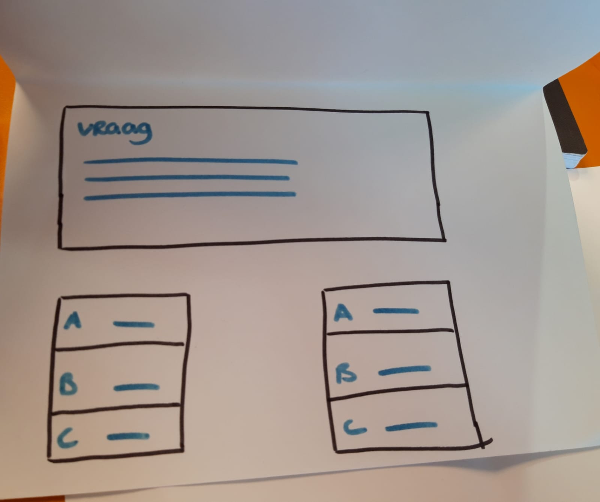

Om mijn kennis te verbreden over het onderwerp playful interaction, ben ik het meer gaan onderzoeken. In het onderstaande zijn er een aantal voorbeelden die mij het meeste indruk gaven. Niet alleen omdat het op een speelse manier wordt gedaan, maar dat er ook een boodschap in zit. Voorbeelden
Jan vorman is een Berlijnse kunstenaar sinds 2007. Hij gebruikt duizenden LEGO stenen voor zijn creaties. Hij gebruikt het voornamelijk voor afbrokkelende gaten in architecturale structuren. Dit doet hij rondom de hele wereld. Jan vormann nodigt de rest van de wereld uit om deel te nemen aan zijn speelse toevoeging in de wereld. Hiervoor heeft hij een speciale website voor aangemaakt. Bron: https://www.janvormann.com/testbild/dispatchwork/
 Playful Interaction  Playful InteractionPlayful Interaction Maak een speelse interactieconcept. Kom met een nieuw concept voor een sociale, speelse interface naar stimuleer positief gedrag binnen het hoofdgebouw van HHS. - Beschrijf / teken de interactie tussen spelers - Beschrijf / teken de interactie tussen spelers en het systeem - Geef het soort spel aan en leg het uit de mode Opdracht 1 Het doel is dat studenten leren door middel van elementen van spellen te gebruiken. Hierbij leren studenten door competentie op een positieve manier te gebruiken. Op het scherm krijg je vragen van een bepaald vak. Het spel heeft minimaal 2 spelers nodig. Daarnaast kan het ook worden gespeeld als 2 teams. Dit wordt gedaan in een parallel positie, door verschillende acties. Daarnaast heb je een scherm nodig waarbij je een computer kan aansluiten voor de vragen. Daarnaast heb je matten nodig, waarbij de studenten de keuze kunnen maken, of zij voor antwoord A, B of C kiezen. Denk hierbij aan Dance revolution.
 Trivia real life
Playful Interation vond ik direct een interessant onderwerp. Je zou wellicht niet direct er bij denken, dat dit ook voor volwassenen kan zijn. Tijdens de hoorcollege kregen wij hier meer informatie over. We hebben veel verschillende voorbeelden gekregen. Hierbij kregen we een quote die erg toepasselijk is voor mij “We don’t stop playing because we grow old, because we stop playing.”
Ik vond het leuk om te zien, dat je aan je ontwerp een belangrijk boodschap kan geven. Bijvoorbeeld dat je ook kan de trap kan pakken, omdat dit zorgt voor een gezondere levens stijl. Dit is dan ook de reden waarom ik Playful Interaction op nummer 2 op mijn lijst heb gezet, qua keuze.
Daarnaast vond ik het wel fijn om te zien, dat je door playful interaction toe te passen, veel verschillende doelen kan bereiken. Leuke apparaten ontwerpen, die als einddoel hebben dat het leuk is. Maar ook meer dan alleen maar 'leuk'. Je kan er voor zorgen dat de mens meer gaat bewegen, je kan iets voor je mede mens betekenen, door iets te ontwerpen wat goed is voor de maatschappij.
Bij de hoorcollege hebben we geleerd dat er gebruik kan worden gemaakt van verschillende soorten sensors:
• Accelerometer (accerleration)
• Microphone (sound/noise)
• Infrared (movement)
• Ultrasound (distance/movements)
• Capacitive (touch)
• Pressure/bend/Pull/twist (movement, touch)
• Fysiologic (heart rate, galvanic skin response, blood, pressure).
De output technologie waarvoor het kan worden gebruikt:
• Sight
• Projection
• Displays
• Light
• Movement
• Touch
• movement
• Vibration
• Temperature
• Hear
• Sound
• Smell
• Taste